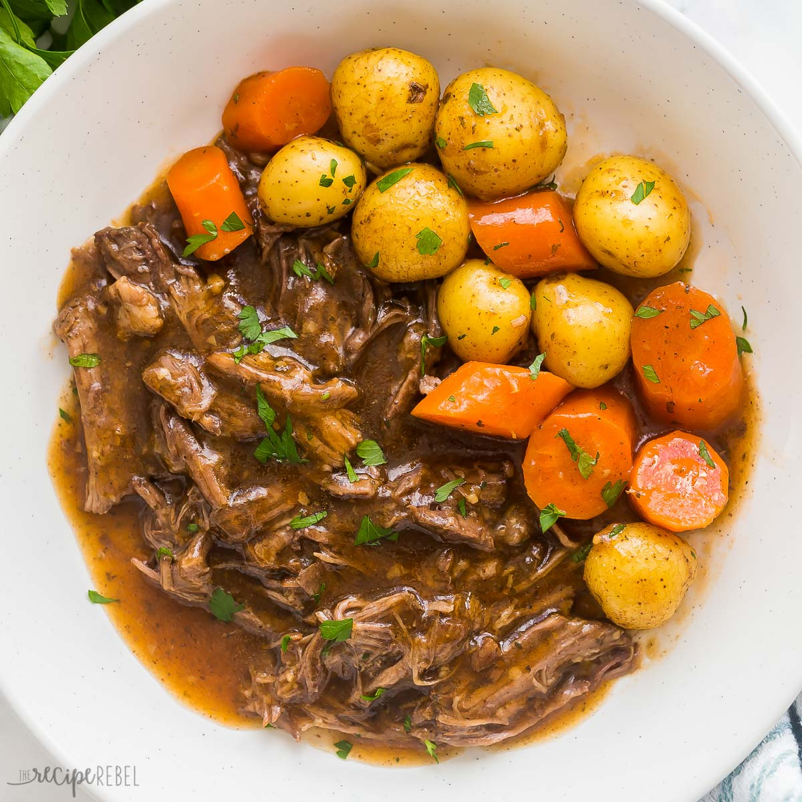

Pot Roast

Description
a dish of meat, usually brisket of beef or chuck roast,
stewed in one piece in a covered pot and served in its own gravy.
Ingredients
- 3 lb chuck roast
- salt, black pepper, to taste
- 1 onion
- 3 cloves garlic
- 2 cup beef broth
- 2 lb small yellow potatoes
- 1 lb carrots
Steps
- Start by seasoning the beef well, on all sides with salt and pepper.
- In a dutch oven or heavy pot, heat oil. Brown roast on all sides to lock in moisture and flavor (about 15-min). Transfer to a plate.
- To the grease left in the pot, add in onions and garlic and saute until onions are translucent (about 2-3 minutes). Then stir in the tomato paste, then flour. At this point the flour will absorb all the oil/ moisture. Add the wine, stir and allow the wine to reduce (1-2 minutes). Add beef broth, a few sprigs of fresh thyme and bay leaves.
- Transfer the beef back to the pot. Add carrots and potatoes around the beef in the pot. Cover and cook in the oven at 350F degrees for 2 ½ to 3 hours.
- Garnish with parsley
- When done, garnish with fresh parsley or cilantro and serve
Take me back